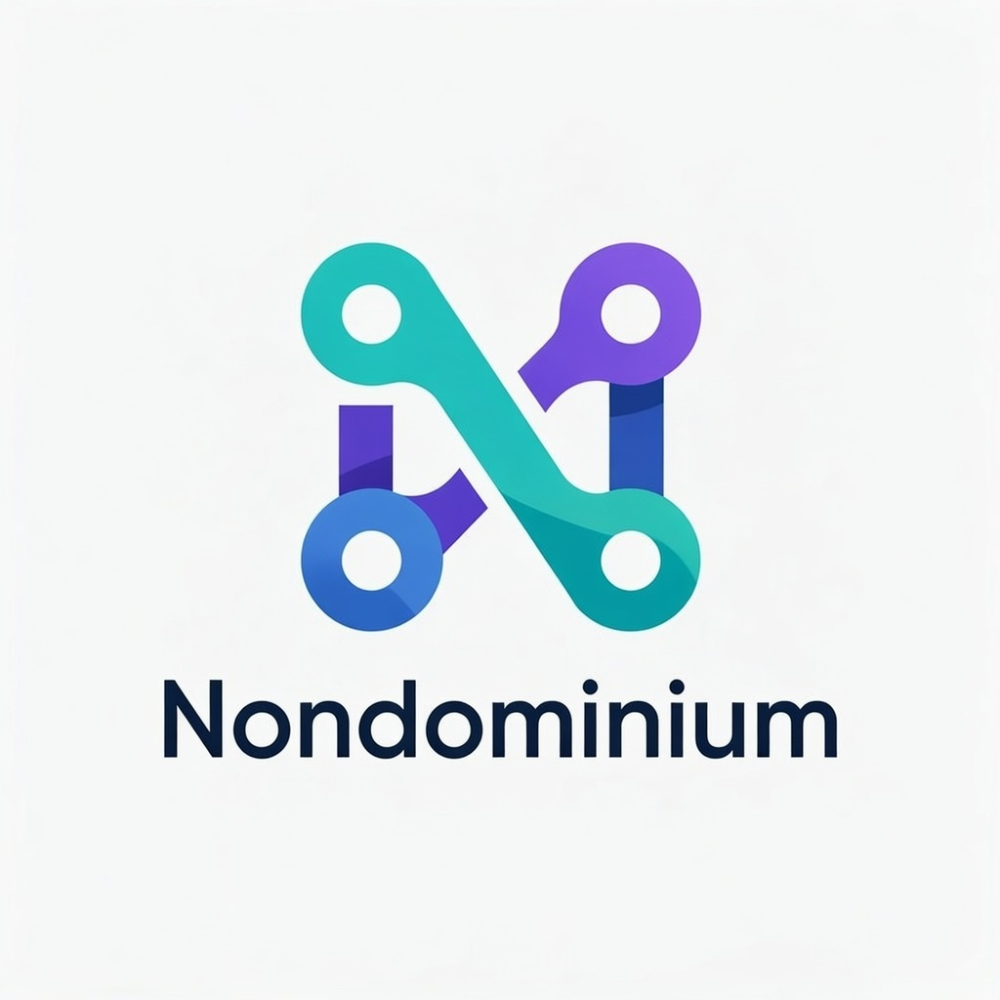

Nondominium


A ValueFlows-compliant resource sharing Holochain application implementing distributed, agent-centric resource management with embedded governance.
Executive Summary
nondominium is a foundational infrastructure project aimed at enabling a new class of Resources that are organization-agnostic, uncapturable, and natively collaborative. These Resources are governed not by platforms or centralized authorities, but through embedded rules, transparent peer validation, and a comprehensive reputation system.
The project’s central goal is to support a peer sharing economy, overcoming the structural flaws of centralized platforms (centralization of power, censorship, unsuitable regulations).
Built on the Holochain framework and using the ValueFlows standard, nondominium allows any Agent to interact with these Resources in a permissionless but accountable environment, with automatic reputation tracking through Private Participation Receipts (PPRs).
Overview
Nondominium is a 3-zome Holochain hApp that enables decentralized resource sharing through:
- Agent identity management with role-based access control
- Resource lifecycle tracking following ValueFlows standards
- Embedded governance for access and transfer rules
- Capability-based security using Holochain’s native features
Architecture
Governance-as-Operator Design:
nondominium implements a modular governance-as-operator architecture that separates data management from business logic enforcement:
zome_person: Agent identity, profiles, roles, and capability-based access controlzome_resource: Pure data model for resource specifications and lifecycle management (state only)zome_gouvernance: State transition operator that evaluates governance rules and validates changes
Key Architecture Benefits:
- Modularity: Governance rules can be modified without changing resource data structures
- Swappability: Different governance schemes can be applied to the same resource types
- Testability: Governance logic can be unit tested independently of data management
- Separation of Concerns: Clear boundaries between data persistence and business rule enforcement
Technology Stack:
- Backend: Rust (Holochain HDK ^0.6.0 / HDI ^0.7.0) compiled to WASM
- Frontend: SvelteKit 2 + Svelte 5 + TypeScript + Vite 6.2.5 + UnoCSS + Melt UI next-gen + Effect-TS
- Testing: Sweettest (Rust, primary) — Tryorama (TypeScript) is deprecated
- Client: @holochain/client 0.19.0
Documentation map: See documentation/DOCUMENTATION_INDEX.md. Post-MVP NDO model and optional Unyt / Flowsta integrations are specified in documentation/requirements/ndo_prima_materia.md and the stubs under documentation/requirements/post-mvp/.
AI Tooling
Nondominium supports Claude Code, Cursor, VS Code Copilot, and any
Open Agent Skill-compatible editor out of the box.
All AI assets are generated automatically when you run nix develop.
Skills (Open Agent Skill format — progressively disclosed on activation):
holochain— Holochain HDK patterns, architecture, testing, TypeScript clientnondominium-domain— NDO three-layer model, PPR system, capability slots, ValueFlows alignment
Skills are materialized from .claude/skills/ into .agents/skills/ (the editor-agnostic
primary discovery path) on every nix develop. .agents/ is gitignored.
Cursor rules (always-loaded project context, generated from pai/):
| Rule | Scope | Content |
|---|---|---|
00-telos | always | Project TELOS — vision, philosophy, AI operating principles |
10-conventions | always | Branch model, commits, Rust/TS/Svelte conventions |
20-architecture | always | Three-zome structure, NDO layers, lifecycle state machine |
30-rust-zomes | **/*.rs | HDK entry patterns, cross-zome calls, validation |
40-svelte-ui | **/*.svelte | Svelte 5 runes, UnoCSS, Effect-TS patterns |
50-tests | dnas/**/tests/**/*.rs | Sweettest setup, multi-agent DHT sync |
Source files (edit these; tools update on next nix develop):
documentation/TELOS.md— Project purpose and operating principlespai/conventions.md— Coding and process conventionspai/cursor-rules/— Architecture, Rust, Svelte, test patterns.claude/skills/nondominium-domain/— Claude Code skill (no rebuild needed)
Environment Setup
PREREQUISITE: Set up the Holochain development environment.
Enter the nix shell by running this in the root folder of the repository:
nix develop # Enter reproducible environment (REQUIRED)
bun install # Install all dependencies
⚠️ Run all commands from within the nix shell, otherwise they won’t work.
Development Workflow
Quick Start
bun run start # Start 2-agent development network with UIs
This creates a network of 2 nodes with their respective UIs and the Holochain Playground for conductor introspection.
Custom Network
AGENTS=3 bun run network # Bootstrap custom agent network (replace 3 with desired count)
Testing
# Sweettest (Rust) — primary test runner
CARGO_TARGET_DIR=target/native-tests cargo test --package nondominium_sweettest
# Test suites
CARGO_TARGET_DIR=target/native-tests cargo test --package nondominium_sweettest person
CARGO_TARGET_DIR=target/native-tests cargo test --package nondominium_sweettest -- --nocapture # verbose
Note: Tryorama (TypeScript) tests in
tests/are deprecated. Seetests/DEPRECATED.md. Do not write new tests there.
Build Pipeline
bun run build:zomes # Compile Rust zomes to WASM
bun run build:happ # Package DNA into .happ bundle
bun run package # Create final .webhapp distribution
Individual Workspaces
bun run --filter ui start # Frontend development server
bun run --filter tests test # Backend test execution
Data Model
Core Principles
- Agent-Centric: All data tied to individual agents with public/private separation
- ValueFlows Compliance: EconomicResource, EconomicEvent, Commitment data structures
- Privacy by Design: Public profiles with encrypted private data
- Capability-Based Security: Role-based access using Holochain capability tokens
- NDO Layer 0:
NondominiumIdentityis a permanent identity anchor for any resource (name, initiator,LifecycleStage,PropertyRegime,ResourceNature). Onlylifecycle_stagemay change post-creation. Implemented in PR #80.
Entry Patterns
All zomes follow consistent patterns for:
create_[entry_type]: Creates entries with discovery anchor linksget_[entry_type]: Retrieves entries by hashget_all_[entry_type]: Discovery via anchor traversalupdate_[entry_type]: Updates with validationdelete_[entry_type]: Soft deletion marking
Testing Architecture
Primary: Sweettest (Rust)
All new tests are written in Sweettest (dnas/nondominium/tests/src/). Shared setup utilities:
setup_two_agents()— two conductors, nondominium DNAsetup_three_agents()— three conductors, nondominium DNAsetup_dual_dna_two_agents()— two conductors, nondominium + hREA DNAs
Deprecated: Tryorama (TypeScript)
Tests in tests/ are deprecated. See tests/DEPRECATED.md. Do not write new tests there.
Distribution
To package the web happ:
bun run package
This generates:
nondominium.webhappinworkdir/(for Holochain Launcher installation)nondominium.happ(subcomponent bundle)
Development Status
- ✅ Phase 1 (Backend): Person management, resource specifications, economic resources, governance foundation, PPR data structures, hREA Person/ReaAgent bridge, NDO Layer 0 identity anchor
- ✅ MVP UI: Lobby → Group → NDO three-level hierarchy with three-level identity model, NDO creation, lifecycle transitions, filter browser, fork friction modal
- 🔄 Phase 2 (In Progress): Economic processes (Use/Transport/Storage/Repair), PPR receipt generation, governance-as-operator architecture, agent promotion workflows
- 📋 Post-MVP: Group DNA backend, NDO cell cloning, PPR reputation UI, Unyt/Flowsta integrations
Documentation
Project Documentation
- Requirements - Project goals and functional requirements
- Specifications - Detailed technical specifications
- Governance Operator Architecture - Modular governance design patterns
- Governance Implementation Guide - Implementation details with code examples
- Cross-Zome API - API specifications for zome communication
- UI Architecture - Frontend architecture and design patterns
- Testing Infrastructure - Testing strategy and framework details
- ValueFlows Action Usage - ValueFlows implementation patterns with governance examples
- API Reference - Complete API documentation
- Documentation Index - Comprehensive documentation guide
Zome Documentation
- Architecture Overview - Overall zome architecture and interactions
- Person Zome - Agent identity and profile management
- Resource Zome - Resource lifecycle and management
- Governance Zome - Governance rules and implementation
Governance & Security
Governance Architecture:
- Governance Operator Architecture - Modular governance design patterns
- Governance Implementation Guide - Implementation details with code examples
- Cross-Zome API - API specifications for zome communication
- Governance Model - Legacy governance model and decision-making processes
Reputation & Security:
- Private Participation Receipts - PPR system documentation
- PPR Security Implementation - Security implementation for PPR system
Applications & Use Cases
- Artcoin Integration - Artcoin application integration
- User Stories - Complete user journey scenarios
Additional Resources
- hREA Integration Strategy - hREA integration planning
- Resource Transport Flow Protocol - Resource transport specifications
- Protocol Bridge Specifications - Bun Protocol Bridge architecture for platform integration (Tiki, Odoo, etc.)
Technology Stack
- Holochain: Distributed application framework
- NPM Workspaces: Monorepo management
- hc: Holochain CLI development tool
- @holochain/tryorama: Testing framework
- @holochain/client: UI-to-Holochain client library
- Holochain Playground: Development introspection tools
- Valueflows: Economic coordination ontology
- hREA: Holochain implementation of Valueflows